Learning Objectives
After completing this lesson, you'll be able to:
- Use parallel processing in Automations.
- Understand when to use the Split-Merge Block.
- Create an Automation with the Split-Merge Block.
Resources
- Starting project | C:\FMEData\Workspaces\AutomateWorkflowsWithFMEFlow\automate-workflows-with-fme-flow--starting-project.fsproject
If you're taking a live Safe Software-hosted training course or using an on-demand lab for this course, we've already imported the content for this lesson into your FME Flow.
If you're completing this lesson with your own FME Flow, you must import the starting project with the content into your FME Flow.
Expand for Steps to Import the Starting Project
3) Navigate to your FME Flow and open Projects. Click Import.
4) Upload automate-workflows-with-fme-flow--starting-project.fsproject as the Project File and then click Import.
5) The first step is Preview Content, where you may choose not to overwrite existing items. If all your items are New Items, you don't need to worry about overwriting existing items. Click Continue.
6) The next step is to select connections and tokens to import. By default, they are not selected to be imported. Select the FME Training PostGIS Database Connection to import. If it isn't imported, the workflows will not run successfully. Click Continue.
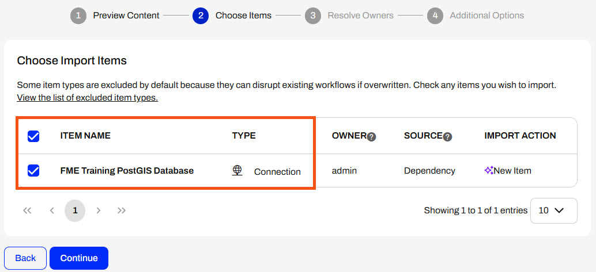
7) The Resolve Owners step only allows you to reassign the project contents to a different user if the admin user doesn't exist on your FME Flow. Click Continue and then click Import Project from the Additional Options step. The project will import and display its import status from the same page.
If the project import failed, check that you uploaded the encryption key and repeat the process. If it still fails, contact us at train@safe.com.
Split-Merge Block
In FME Flow Automations, you may split your workflows to process multiple actions simultaneously and use FME Flow's parallel processing capabilities with numerous engines. Splitting your workflow lowers the processing time by running multiple workspaces at once. It also increases fault tolerance, as workspaces that run in parallel will still process even if one workspace fails.
When you split your workflows, each stream creates an output. To combine the outputs into a single message in Automations, you use a Split-Merge Block. The Split-Merge Block lets you split the Automation workflow into multiple streams and then wait for all components within the block to complete before continuing the workflow along a single stream.
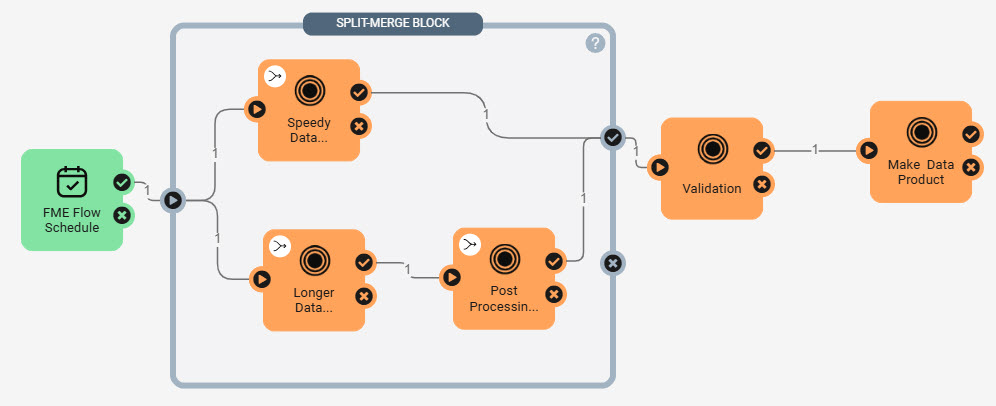
In this workflow, the trigger passes one message to the Split-Merge Block. The workflow is split and sends two messages, one to each workspace. Once the workspaces are complete, each workspace sends a message to the block's success port. The Split-Merge Block combines the two messages into one message and passes it along to the Validation workspace action. Two messages would pass to the Validation workspace without the Split-Merge Block, triggering it to run twice.

The Merge Messages action in FME Flow Automations functions similarily to the Split-Merge Block by merging messages and waiting to process all downstream actions until it receives messages from all previous actions. Compared to the Split-Merge Block, the Merge Messages action limits you from merging messages from multiple triggers and from Automation Writer outputs. Due to these, the Merge Messages action is legacy functionality in Automations and is only present to support backwards compatibility for your workflows. For more information, see our Merge Messages documentation.
Automations Writer and Split-Merge Block
You may also use the Split-Merge Block to combine outputs from Automations Writers in workspace actions. Oftentimes, a single workspace run with an Automations Writer outputs multiple messages through the Automations Writer port, which triggers downstream actions to run multiple times for one initial input message from a trigger. You often only need to send one outgoing message with an external action or process a downstream summary workspace once. In this case, the Split-Merge Block will combine output messages from Automations Writers within it and merge them into one message to output.

In this example, the Process State workspace action outputs 60 messages through the County Automations Writer port, which enter the Split-Merge Block and trigger the Process County workspace to run 60 times. Each county contains 15 blocks, so the Block Automations Writer outputs 900 messages and triggers the Process Block workspace to run 900 times. The Split-Merge Block waits for all 900 messages from the Process Block workspace, merges them by county, and outputs only 60 messages to the Downstream Work action that processes one job per county.
Considerations with the Split-Merge Block
While the Split-Merge Block is handy for your parallel processing or Automations Writer workflows, there are some limitations you should be aware of when you use it:
- The Split-Merge Block only supports Run a Workspace and Run a Dynamic Workspace actions.
- The Split-Merge Block only outputs from a single port, either the success or failure port, not both. If the workspaces send messages to both ports, the failure port takes precedence, and messages are only output from it.
- If no messages pass to either output port, the Split-Merge Block will output a single message from the success port to indicate that all jobs within the block are complete.
- You cannot directly connect an action upstream in the Automation to an action within the Split-Merge Block; it must connect through the block's input port. You can, however, directly connect an output port from an action within the block to an outside action downstream of the block.
Exercise

Frank is designing an Automation to perform asynchronous data updates daily. He has multiple workspaces for data updates and post-processing, performs data validation, and makes a final product once the updates are complete.
Follow along with Frank's steps as he creates an Automation that uses FME Flow's parallel processing and the Split-Merge Block.
1) Create Automation
Frank navigates to FME Flow and creates a new Automation.

2) Configure a Schedule Trigger
Frank clicks the trigger icon to open its details. He configures an FME Flow Schedule trigger to run on a daily interval. Frank selects Repeat on Interval for Schedule Type and sets the interval to 1 day. He ensures Does Not Expire is selected and clicks Apply to close the trigger details.
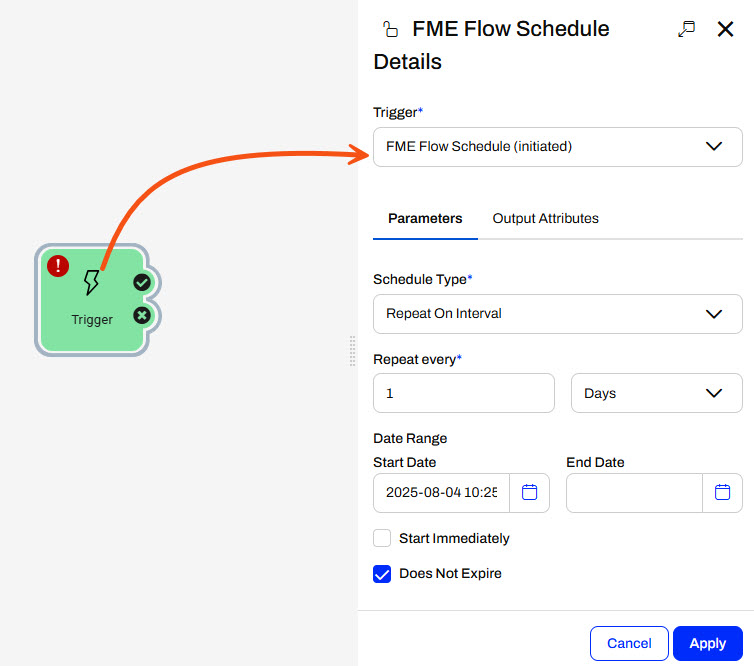
3) Add Data Updates Workspaces
Frank adds a Run a Workspace internal action to the trigger success port. He selects the SpeedyDataUpdate,fmw workspace in the Data Updates and Validation repository. Since the workspace has no configurable parameters, Frank clicks Apply to close the details pane.
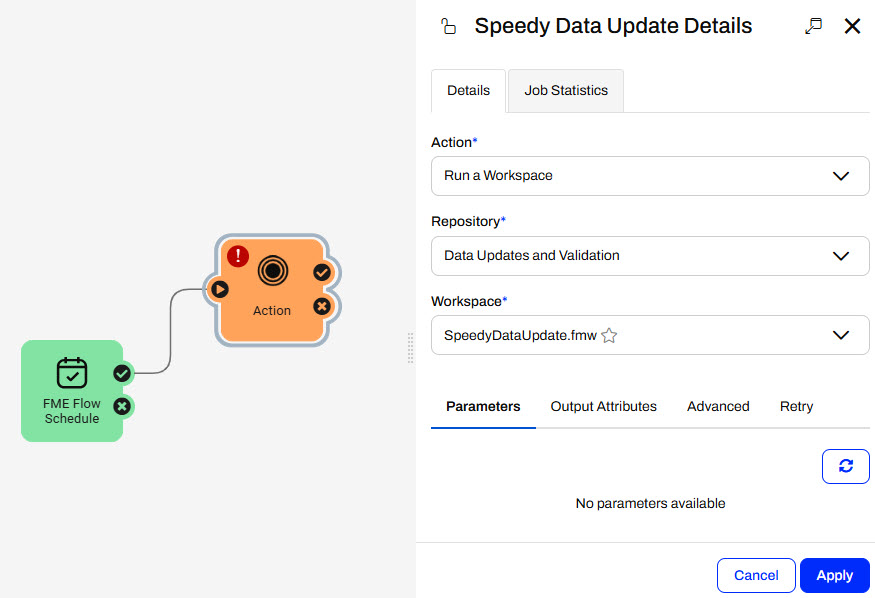
The example workspaces for this exercise are placeholders – they don't really carry out any data integration. However, the Automation design follows common real-world scenario by performing data updates and validation checks.
Frank has another data update that can run asynchronously to the SpeedyDataUpdate workspace. He adds another Run a Workspace action and connects it to the trigger's success port. This time, he selects the LongerDataUpdate.fmw workspace in the Data Updates and Validation repository.
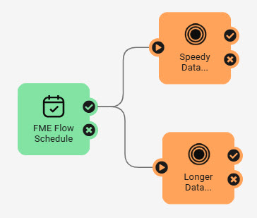
By splitting the workflow, the SpeedyDataUpdate and LongerDataUpdate workspaces will run simultaneously on different FME Engines, as long as multiple engines are available.
After the LongerDataUpdate workspace is complete, the data must undergo post-translation processing. Frank adds another Run a Workspace action and sets it to run the PostProcessing_LDU.fmw workspace in the same repository. He connects it to the success port of the LongerDataUpdate workspace action.
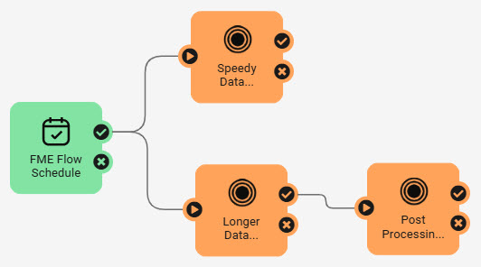
After both data update processes, Frank needs to run his Validation and MakeDataProduct workspaces in order. Frank adds the Validation.fmw and connects it to the success ports of the SpeedyDataUpdate and the LongerDataUpdate.
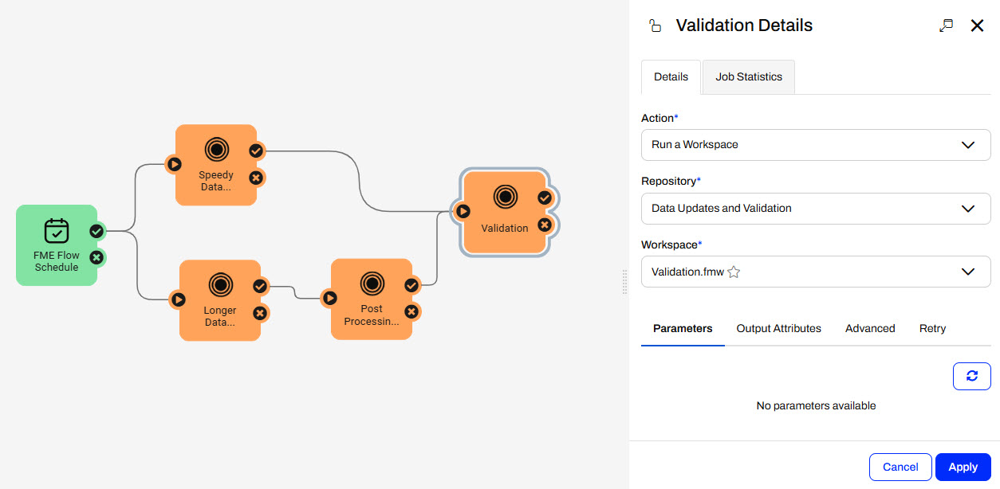
After the Validation workspace, Frank adds the MakeDataProduct.fmw, which is also in the Data Updates and Validation repository.
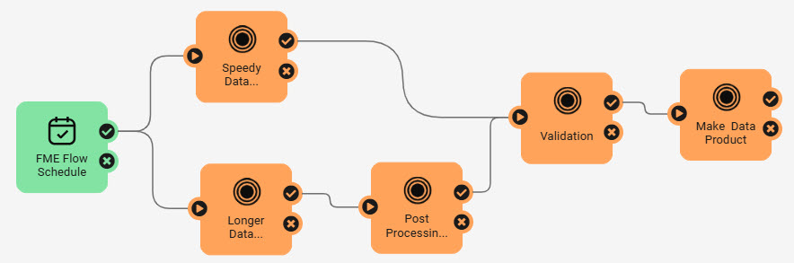
If Frank starts and triggers his Automation, the trigger will send a message to both the Speedy and Longer Data Update workspaces and trigger them to run simultaneously. Once the Speedy Data Update finishes, it sends a message to run the Validation and Make Data Product workspaces. After the Longer Data Update is complete, the Post Processing workspace runs and sends a message to run the Validation and Make Data Product workspaces. Frank's Automation runs the Validation and Make Data Product workspaces twice by splitting the data stream into two and then combining it at the Validation workspace. 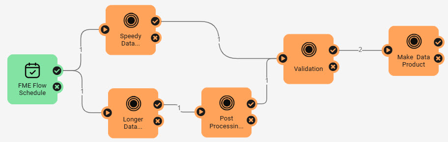
5) Add Split-Merge Block
Frank wants to run the Validation and Make Data Product workspaces only once per automation trigger, not twice. Therefore, Frank needs to use the Split-Merge Block to split the workflow and merge the messages from the Data Updates before continuing with the Validation workspace.
Frank disconnects the trigger from the first two workspaces and disconnects the Validation workspace from the Speedy Data Update and Post Processing workspaces.
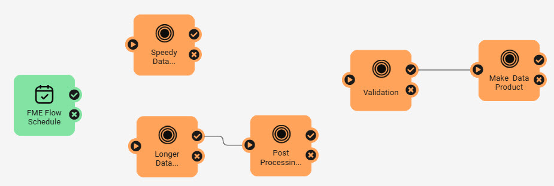
Frank adds a Split-Merge Block to the canvas and places it around the Data Updates and Post Processing workspace actions.
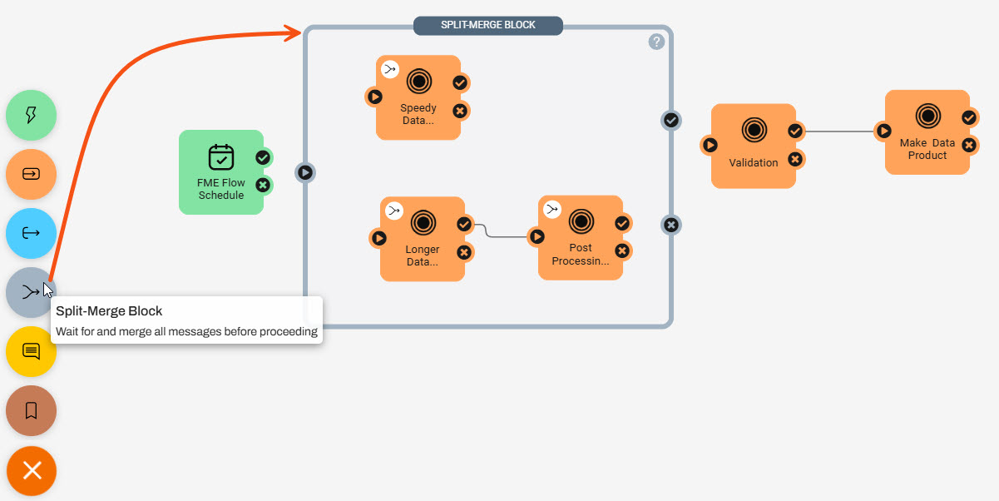
He connects the workspaces to the block's input and success output ports, the trigger to the input port, and the Validation action to the output success port.
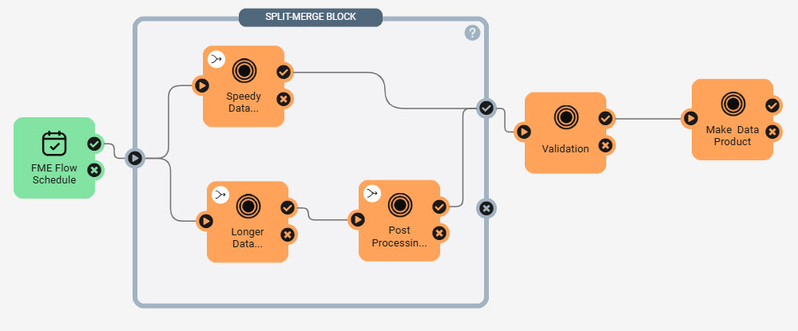
6) Start and Trigger the Automation
Frank saves his Automation as Daily Data Update and clicks Start to run it. To run the Automation before tomorrow, Frank clicks on the FME Flow Schedule trigger icon and then clicks Trigger from its details pane.
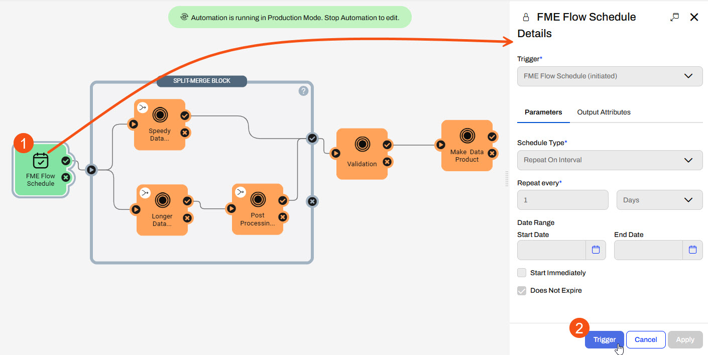
Frank refreshes the Automation canvas after a couple of moments. He sees the event counts show the Validation and Make Data Product workspaces only ran once, meaning his Split-Merge Block worked to merge the output messages from the parallel processes before continuing with the downstream actions.
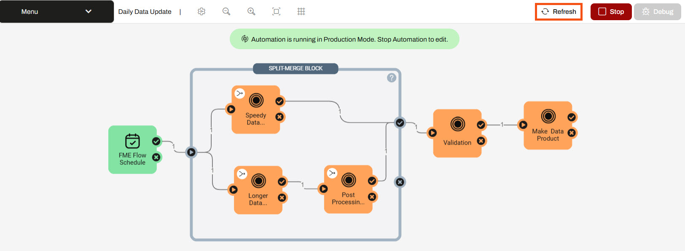
7) Inspect Jobs
Frank navigates to the Jobs page on FME Flow and inspects the jobs that ran from his Automation. He sees that the Speedy and Longer Data Updates started at the same time and ran simultaneously, yet the Validation workspace did not run until the PostProcessing_LDU workspace completed.
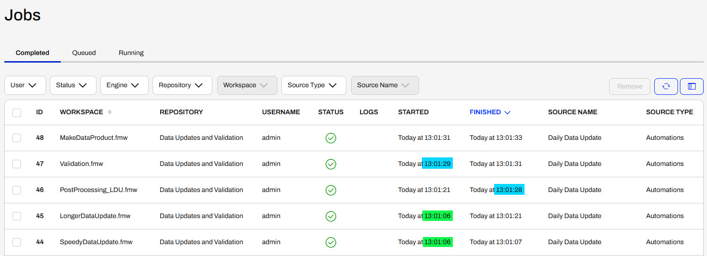
Frank has used the Split-Merge Block to orchestrate parallel processing with FME Flow and merge the workflow back into one before continuing with downstream workspace actions.